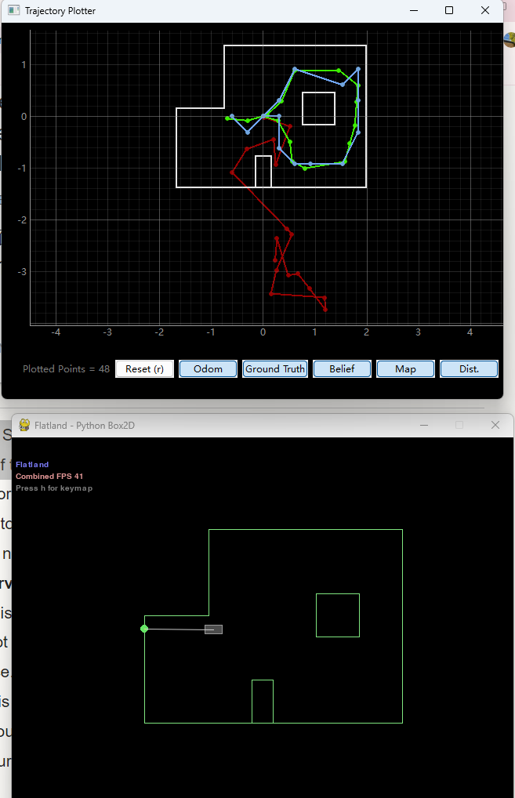
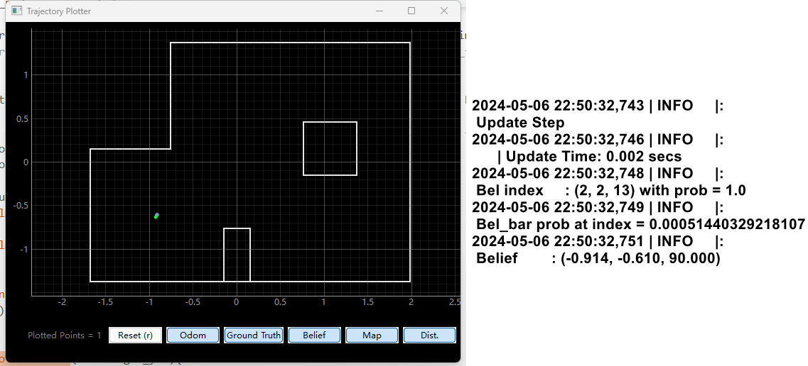
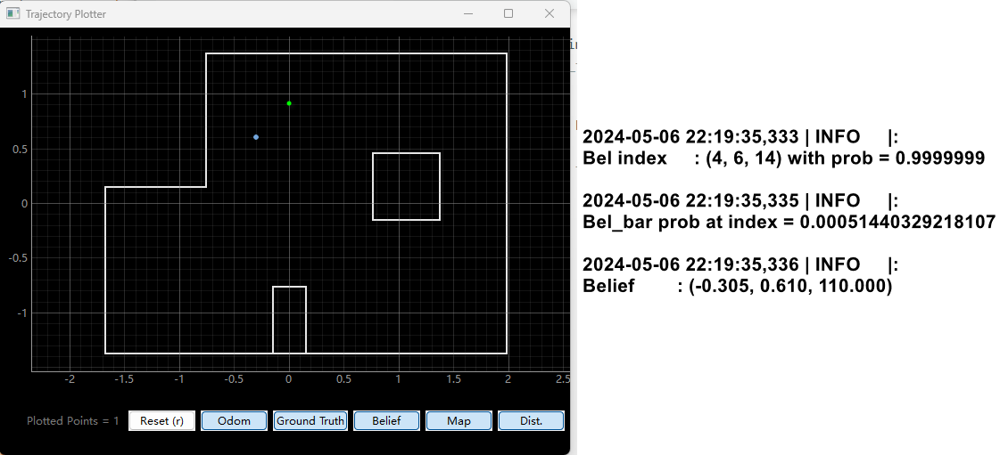

Test Localization in Simulation
First, I run the given code to test the localization in simulation. The following figure shows the result, which contains odom, ground truth, and beliefs.
Test Localization in Real World
Since I need to use the sensor measurements to run the update step, I first need to control the robot to rotate 360 degrees and collect sensor measurements every 20 degrees so that I will collect a total of 18 data from the front sensors. Thus, I made the following changes to "perform_observation_loop":
Rotate and Measure Demo
Result
I then places the robot in the right lower corner marked point in the lab, and use the update step . The plot below shows the result. The blue point is the real poses, and the green point is the ground truth. The errors are 0.0004 meters, −0.0004 meters, and 90 degrees. Euclidean distance is 0.00057m. The reason for the yaw error may be that I oriented the robot towards the window, which does not align with the the direction of 0 degree of the ground truth.
I also test in the other poses.
For pose (0 ft,3 ft, 0 deg), the errors are -0.305 meters, -0.3044 meters, and 110 degrees. Euclidean distance is 0.43091108131492745m.
The following are test at the other 2 poses.
Discussion
The accuracy is highest at the test points (-3ft, -2ft, 0 deg) and (5ft, -3ft, 0 deg). I think this is because at these two Poses, the tof readings of the robot are more accurate, because at these two points, the angle of the tof light and the wall is closer to 90 degrees. When the angle is not 90 degrees, the angle will not produce much error because the robot is close to the wall.